<!DOCTYPE html>
<html lang="en">

<head>
    <meta charset="UTF-8">
    <meta name="viewport" content="width=device-width, initial-scale=1.0">
    <title>Parallel DBSCAN Optimization Project</title>
    <link href="https://fonts.googleapis.com/css2?family=Roboto:wght@300;400;700&display=swap" rel="stylesheet">
    <link rel="stylesheet" href="styles.css">
    <style>
        body {
            font-family: 'Roboto', sans-serif;
            margin: 0;
            padding: 0;
            line-height: 1.4;
            color: #333;
            background: #f4f4f9;
            font-size: 14px;
        }

        header {
            background: #4CAF50;
            color: white;
            padding: 1rem 0;
            text-align: center;
        }

        nav {
            background: #333;
            color: white;
            padding: 0.5rem 0;
            text-align: center;
        }

        nav ul {
            list-style: none;
            padding: 0;
            margin: 0;
        }

        nav ul li {
            display: inline;
            margin: 0 15px;
        }

        nav ul li a {
            color: white;
            text-decoration: none;
            font-weight: bold;
        }

        nav ul li a:hover {
            text-decoration: underline;
        }

        main {
            max-width: 1200px;
            margin: 2rem auto;
            padding: 0 1rem;
        }

        section {
            background: white;
            border-radius: 8px;
            box-shadow: 0 2px 4px rgba(0, 0, 0, 0.1);
            margin-bottom: 2rem;
            padding: 1.5rem;
        }

        section h2 {
            color: #4CAF50;
            border-bottom: 2px solid #ddd;
            padding-bottom: 0.5rem;
            margin-bottom: 1rem;
        }

        table {
            width: 100%;
            border-collapse: collapse;
            margin-top: 1.5rem;
        }

        table,
        th,
        td {
            border: 1px solid #ddd;
        }

        th,
        td {
            padding: 0.75rem;
            text-align: left;
        }

        th {
            background-color: #f4f4f9;
            color: #333;
        }

        ul {
            list-style-type: disc;
            margin-left: 1.5rem;
        }

        .gif-container {
            display: flex;
            justify-content: center;
            gap: 15px;
            margin-top: 1rem;
        }

        .gif-container img {
            width: 20%;
            height: auto;
            border-radius: 5px;
        }

        .code-block {
            background: #1e1e1e;
            color: #dcdcdc;
            padding: 0.5rem;
            border-radius: 8px;
            margin: 1rem 0;
            font-family: 'Courier New', Courier, monospace;
            font-size: 8px;
            overflow-x: auto;
        }

        .code-explanation {
            background: #f4f4f9;
            padding: 1rem;
            border-radius: 8px;
            margin: 1rem 0;
            font-size: 12px;
        }

        footer {
            background: #333;
            color: white;
            text-align: center;
            padding: 1rem 0;
            margin-top: 2rem;
        }

        footer p {
            margin: 0;
        }
    </style>
</head>

<body>
    <header>
        <h1>Parallel Density-Based Spatial Clustering</h1>
        <p>By Yi Ge (Ellen)</p>
    </header>

    <nav>
        <ul>
            <li><a href="#summary">Summary</a></li>
            <li><a href="#methodology">Methodology</a></li>
            <li><a href="#implementation">Implementation</a></li>
            <li><a href="#analysis">Analysis</a></li>
            <li><a href="#finetuning">Fine-tuning</a></li>
            <li><a href="#reference">Reference</a></li>
        </ul>
    </nav>

    <main>
        <section id="summary">
            <h2>Summary</h2>
            <p>
                This project focuses on optimizing the DBSCAN (Density-Based Spatial Clustering of Applications with
                Noise) algorithm
                for large datasets using various parallel computing strategies. Key challenges addressed include
                computational cost,
                random access inefficiencies, and workload imbalances in skewed datasets.
            </p>
            <div class="gif-container">
                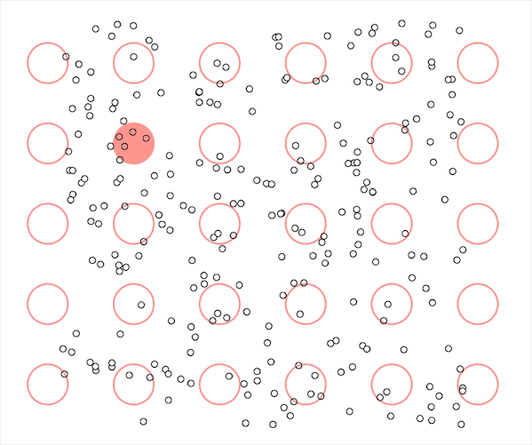
                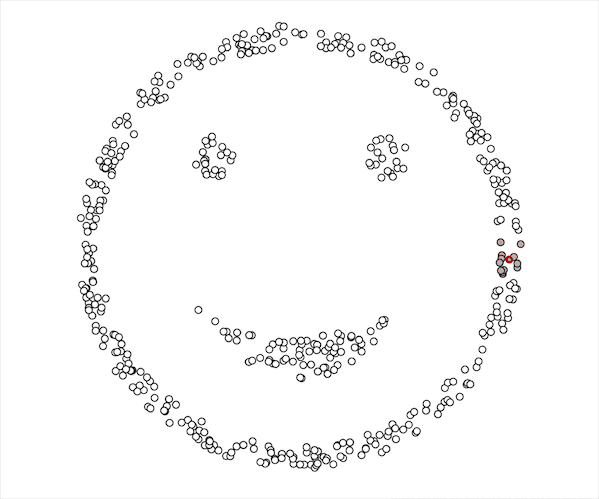
            </div>
            <h3>Key Knowledge and Formulas of DBSCAN</h3>
            <ul>
                <li><strong>Key Parameters:</strong> <code>ε</code> (neighborhood radius) and <code>MinPts</code>
                    (minimum points in the neighborhood).</li>
                <li><strong>Core Point Condition:</strong> A point <code>p</code> is a core point if:
                    <code>|N<sub>ε</sub>(p)| ≥ MinPts</code>, where <code>N<sub>ε</sub>(p)</code> is the
                    <code>ε</code>-neighborhood of point <code>p</code>.</li>
                <li><strong>Neighborhood Definition:</strong> <code>N<sub>ε</sub>(p) = {q ∈ D | dist(p, q) ≤ ε}</code>,
                    where <code>dist(p, q)</code> is the distance between points <code>p</code> and <code>q</code>
                    (commonly Euclidean distance).</li>
            </ul>
            <p>
                DBSCAN groups points into clusters based on density and labels points as core, border, or noise
                depending on their neighborhood density.
            </p>
        </section>

        <section id="methodology">
            <h2>Methodology</h2>
            <table>
                <thead>
                    <tr>
                        <th>Method</th>
                        <th>Details</th>
                        <th>Time Complexity</th>
                        <th>Platform</th>
                    </tr>
                </thead>
                <tbody>
                    <tr>
                        <td><strong>NaiveDBScanner</strong></td>
                        <td>A naive implementation where we build neighbors by going through every pair of points, then
                            we simply find all connected parts by performing Breadth-first search (BFS).</td>
                        <td>O(n²)</td>
                        <td>C++<br>CPU</td>
                    </tr>
                    <tr>
                        <td><strong>OpenMPDBScanner</strong></td>
                        <td>The multi-threaded CPU implementation of NaiveDBScanner, achieved using C++ with OpenMP and
                            SIMD instructions.</td>
                        <td>O(n²/p) (p: number of threads)</td>
                        <td>C++<br>CPU<br>OpenMP+SIMD</td>
                    </tr>
                    <tr>
                        <td><strong>GraphDBScanner</strong></td>
                        <td>A sequential version of graph-based & serial DBSCAN, using CPU BFS.</td>
                        <td>Average: O(n log n / p)<br>Best: O(n/p)<br>Worst: O(n²/p)<br>Theoretical: O(n²/p)<br>(p:
                            number of GPU cores)</td>
                        <td>C++<br>GPU (for Graph Construction) & CPU (for BFS)<br>CUDA</td>
                    </tr>
                    <tr>
                        <td><strong>ParallelDBScanner</strong></td>
                        <td>A CUDA version of the GraphDBScanner, which utilizes a compact adjacency list to represent
                            the graph. Both graph construction (<em>exclusive_scan</em> with Thrust library) and cluster
                            identification (BFS with level synchronization) are parallelized.</td>
                        <td>Average: O(n log n / p)<br>Best: O(n/p)<br>Worst: O(n²/p)<br>Theoretical: O(n²/p)<br>(p:
                            number of GPU cores)</td>
                        <td>C++<br>GPU<br>CUDA</td>
                    </tr>
                    <tr>
                        <td><strong>SLScanner</strong></td>
                        <td>Basically invoking the sklearn.cluster.DBSCAN. For reference, this version includes a k-d
                            tree for building neighbors faster. The BFS procedure is optimized using Cython (C extension
                            for Python) for fair comparison.<br><em>Note:</em> DBSAN implementation in Scikit-learn does
                            not use a strict BFS algorithm. Instead, it employs a BFS-like approach to expand clusters.
                        </td>
                        <td>Average: O(n²)<br>Empirical: O(n log n)</td>
                        <td>Python:<br>Scikit-Learn<br>Cython</td>
                    </tr>
                    <tr>
                        <td><strong>ParallelDBScanner+</strong></td>
                        <td>Optimizing the 1st stage of ParallelDBScanner with grid structure. The BFS part (2nd stage)
                            stays the same as in ParallelDBScanner.</td>
                        <td>Theoretical: O(n log n / p)<br>Average: O(n log n / p)<br>Best: O(n/p)<br>(p: number of GPU
                            cores)</td>
                        <td>C++<br>GPU<br>CUDA</td>
                    </tr>
                    <tr>
                        <td><strong>ParallelDBScanner++</strong></td>
                        <td>A brand-new implementation: a hybrid CUDA MPI version (best suitable for Big Data platform
                            like MapReduce or Spark).<br><strong>Phase 1:</strong> Data Partitioning<br><strong>Phase
                                2:</strong> Cell Graph Construction<br><strong>Phase 3:</strong> Cell Graph Merging</td>
                        <td>Time complexity of an (ε, ρ)-region query with R*-tree or kd-tree:<br>O(log |cell|), where
                            |cell| is the total number of cells in the two-level cell dictionary.<br>(p: a point)</td>
                        <td>C++<br>GPU<br>CUDA<br>MPI</td>
                    </tr>
                </tbody>
            </table>
        </section>

        <section id="implementation">
            <h2>Implementation</h2>
            <h3>OpenMPDBScanner</h3>
            <div class="code-block">
                <pre>
#pragma omp parallel for num_threads(4)
for (size_t i = 0; i < points.size(); ++i) {
    for (size_t j = 0; j < points.size(); ++j) {
        if (i != j && euclidean_distance(points[i], points[j]) <= eps) {
            #pragma omp critical
            neighbors[i].push_back(j);
        }
    }
}
</pre>
            </div>
            <div class="code-explanation">
                <p>
                    <strong>Explanation:</strong> The <code>omp parallel for</code> directive is used to parallelize the
                    outer loop for building neighborhoods.
                    This enables multiple threads to work concurrently, reducing computation time significantly.
                </p>
            </div>

            <div class="code-block">
                <pre>
#pragma omp parallel for schedule(dynamic) num_threads(4)
for (size_t i = 0; i < points.size(); ++i) {
    if (points[i].cluster_id == 0) { // Unclassified point
        if (neighbors[i].size() >= min_pts) {
            #pragma omp critical
            {
                cluster_id++;
                bfs_cluster(i, cluster_id, eps, min_pts, points, neighbors);
            }
        } else {
            points[i].cluster_id = -1; // Mark as noise
        }
    }
}
</pre>
            </div>
            <div class="code-explanation">
                <p>
                    <strong>Explanation:</strong> Using <code>schedule(dynamic)</code>, the loop dynamically assigns
                    chunks of iterations to threads,
                    ensuring better load balancing for unpredictable workloads.
                </p>
            </div>

            <h3>ParallelDBScanner</h3>
            <div class="code-block">
                <pre>
        // Graph structure to represent the adjacency list in CSR format
        struct Graph {
            thrust::device_vector<int> row_ptr;  // Row pointer for CSR format
            thrust::device_vector<int> col_indices;  // Column indices for CSR format
        };
        </pre>
            </div>
            <div class="code-explanation">
                <p><strong>Explanation:</strong> The Graph structure is designed using CUDA's thrust library for
                    efficient representation of adjacency lists.</p>
            </div>

            <div class="code-block">
                <pre>
        // CUDA kernel to perform BFS for cluster identification
        __global__ void bfs_kernel(int num_points, const int* row_ptr, const int* col_indices,
                                   int* cluster_ids, int current_cluster_id) {
            int idx = blockDim.x * blockIdx.x + threadIdx.x;
            if (idx < num_points && cluster_ids[idx] == 0) { // Unvisited point
                cluster_ids[idx] = current_cluster_id;
                for (int i = row_ptr[idx]; i < row_ptr[idx + 1]; ++i) {
                    int neighbor = col_indices[i];
                    if (cluster_ids[neighbor] == 0) {
                        cluster_ids[neighbor] = current_cluster_id;
                    }
                }
            }
        }
        </pre>
            </div>
            <div class="code-explanation">
                <p><strong>Explanation:</strong> The CUDA kernel efficiently assigns cluster IDs using BFS on the
                    adjacency list.</p>
            </div>

            <div class="code-block">
                <pre>
        // CUDA device function to compute Euclidean distance
        __device__ float euclidean_distance(const Point& a, const Point& b) {
            float dx = a.x - b.x;
            float dy = a.y - b.y;
            return sqrtf(dx * dx + dy * dy);
        }
        
        // CUDA kernel to construct the adjacency list
        __global__ void construct_adjacency_list(const Point* points, int* row_ptr, int* col_indices,
                                                 int num_points, float eps) {
            int idx = blockDim.x * blockIdx.x + threadIdx.x;
            if (idx < num_points) {
                int count = 0;
                for (int j = 0; j < num_points; ++j) {
                    if (idx != j && euclidean_distance(points[idx], points[j]) <= eps) {
                        col_indices[row_ptr[idx] + count++] = j;
                    }
                }
            }
        }
        </pre>
            </div>
            <div class="code-explanation">
                <p><strong>Explanation:</strong> Device functions and kernels compute distances and construct adjacency
                    lists for graph-based DBSCAN.</p>
            </div>

            <!-- OpenMPDBScanner -->
            <h3>OpenMPDBScanner</h3>
            <div class="code-block">
                <pre>
#pragma omp parallel for num_threads(4)
for (size_t i = 0; i < points.size(); ++i) {
    for (size_t j = 0; j < points.size(); ++j) {
        if (i != j && euclidean_distance(points[i], points[j]) <= eps) {
            #pragma omp critical
            neighbors[i].push_back(j);
        }
    }
}
</pre>
            </div>
            <div class="code-explanation">
                <p>
                    <strong>Explanation:</strong> The <code>omp parallel for</code> directive is used to parallelize the
                    outer loop for building neighborhoods.
                    This enables multiple threads to work concurrently, reducing computation time significantly.
                </p>
            </div>

            <!-- ParallelDBScanner+ -->
            <h3>ParallelDBScanner+</h3>

            <h4>Binning Kernel</h4>
            <p>The binning kernel assigns each point to a specific cell in the grid for efficient neighbor
                identification.</p>
            <div class="code-block">
                <pre>
__global__ void binning_kernel() {
    int v = blockIdx.x * blockDim.x + threadIdx.x;
    if (v >= cuConstParams.num_points) return;

    float2 point = cuConstParams.points[v];
    float side = cuConstParams.side;
    int col_idx = (point.x - cuConstParams.min_x) / side;
    int row_idx = (point.y - cuConstParams.min_y) / side;

    cuConstParams.bin_index[v] = row_idx * cuConstParams.num_cols + col_idx;
    cuConstParams.point_index[v] = v;
}
</pre>
            </div>
            <div class="code-explanation">
                <p><strong>Explanation:</strong> Each point is mapped to a grid cell based on its coordinates. This
                    spatial partitioning helps reduce search space for neighbor computation.</p>
            </div>

            <h4>Sorting</h4>
            <p>After binning, points are sorted based on their cell index using <code>thrust::sort_by_key</code>.</p>
            <div class="code-block">
                <pre>
// Use Thrust to sort points by their bin index
thrust::sort_by_key(d_bin_index.begin(), d_bin_index.end(), d_point_index.begin());

// Call the find_bin_start_kernel to determine the start and end indices for each bin
find_bin_start_kernel<<<numBlocks, blockSize>>>();

// Call the degree_kernel to calculate the degree for each point
degree_kernel<<<numBlocks, blockSize>>>();

// Use Thrust for exclusive scan to determine the start index in the adjacency list
thrust::exclusive_scan(d_degree.begin(), d_degree.end(), d_degree.begin());
</pre>
            </div>
            <div class="code-explanation">
                <p><strong>Explanation:</strong> Sorting points within bins organizes data for efficient neighbor
                    searching and cluster identification.</p>
            </div>

            <h4>Finding Bin Start/End Indices</h4>
            <p>The kernel identifies the start and end indices of each cell in the sorted list, allowing efficient
                access to all points in a cell.</p>
            <div class="code-block">
                <pre>
__global__ void find_bin_start_kernel() {
    int v = blockIdx.x * blockDim.x + threadIdx.x;
    if (v >= cuConstParams.num_points) return;

    int bin_idx = cuConstParams.bin_index[v];
    if (v == 0) {
        cuConstParams.bin_start_index[bin_idx] = 0;
    } else {
        int last_bin_idx = cuConstParams.bin_index[v - 1];
        if (bin_idx != last_bin_idx) {
            cuConstParams.bin_start_index[bin_idx] = v;
            cuConstParams.bin_end_index[last_bin_idx] = v;
        }
    }
    if (v == cuConstParams.num_points - 1) {
        cuConstParams.bin_end_index[bin_idx] = v + 1;
    }
}
</pre>
            </div>
            <div class="code-explanation">
                <p><strong>Explanation:</strong> Start and end indices for bins allow quick neighbor lookups within the
                    grid, improving performance.</p>
            </div>

            <h4>Degree Calculation</h4>
            <p>The <code>degree_kernel</code> calculates the number of neighbors for each point by examining its cell
                and adjacent cells.</p>
            <div class="code-block">
                <pre>
__global__ void degree_kernel() {
    int v = blockIdx.x * blockDim.x + threadIdx.x;
    if (v >= cuConstParams.num_points) return;

    size_t pid = cuConstParams.point_index[v];
    float2 p1 = cuConstParams.points[pid];
    int bin_idx = cuConstParams.bin_index[v];
    size_t degree = 0;

    for (int neighbor_bin_id = 0; neighbor_bin_id < 9; ++neighbor_bin_id) {
        degree += degree_in_bin(p1, neighbor_bin_id);
    }
    cuConstParams.degree[pid] = degree;
}
</pre>
            </div>
            <div class="code-explanation">
                <p><strong>Explanation:</strong> The degree kernel finds neighbors within the specified range by
                    scanning adjacent cells, enabling efficient clustering.</p>
            </div>
            <h3>ParallelDBScanner++</h3>

            <h4>Phase 1: Work Partitioning</h4>
            <div class="code-block">
                <pre>
    // Phase 1: Data partitioning
    t.reset();
    setup(points, eps, minPts);
    construct_global_graph(&params, point_index, cell_start_index, cell_end_index);
    std::vector<int> local_cell_index = random_split(numTasks, taskid);
    size_t local_cell_count = local_cell_index.size();
    
    double workPartitioningTime = t.elapsed();
    if (taskid == MASTER) {
        printf("Step 1. Work partitioning time: %.6fms\n", workPartitioningTime);
    }
    </pre>
            </div>
            <div class="code-explanation">
                <p>
                    <strong>Explanation:</strong> This step partitions the data into cells, with each cell assigned to
                    an MPI worker. The partitions are split randomly across workers for load balancing.
                </p>
            </div>

            <h4>Phase 2: Partial Graph Construction</h4>
            <div class="code-block">
                <pre>
    // Phase 2: Build partial clustering graph
    std::vector<size_t> local_point_id;
    std::vector<short> local_point_is_core;
    std::vector<size_t> local_adj_list;
    std::vector<Cell> local_partition;
    
    t.reset();
    constructLocalCellGraph(local_cell_index,
                            local_point_id,
                            local_point_is_core,
                            local_adj_list,
                            local_partition);
    
    double constructGraphTime = t.elapsed();
    if (taskid == MASTER) {
        printf("Step 2. Partial cell graph construction: %.6fms\n", constructGraphTime);
    }
    
    size_t local_point_count = local_point_id.size();
    size_t local_adj_list_len = local_adj_list.size();
    </pre>
            </div>
            <div class="code-explanation">
                <p>
                    <strong>Explanation:</strong> Each worker constructs a local graph for its assigned cells. Core
                    points and edges between cells are identified during this process.
                </p>
            </div>

            <h4>Phase 3: Graph Merging and Point Labeling</h4>
            <div class="code-block">
                <pre>
    // Phase 3: Merge clustering graphs
    if (taskid != MASTER) {
        // Send local graph to the master
        MPI_Send(&local_adj_list_len, 1, MPI_UNSIGNED_LONG, MASTER, 1, MPI_COMM_WORLD);
        MPI_Send(&local_adj_list[0], local_adj_list_len, MPI_UNSIGNED_LONG, MASTER, 2, MPI_COMM_WORLD);
        MPI_Send(&local_point_id[0], local_point_count, MPI_UNSIGNED_LONG, MASTER, 3, MPI_COMM_WORLD);
        MPI_Send(&local_point_is_core[0], local_point_count, MPI_SHORT, MASTER, 4, MPI_COMM_WORLD);
    } else {
        // Master receives graphs from workers and merges them
        for (int i = 1; i < numTasks; ++i) {
            size_t other_adj_list_len;
            MPI_Recv(&other_adj_list_len, 1, MPI_UNSIGNED_LONG, i, 1, MPI_COMM_WORLD, &status);
    
            std::vector<size_t> other_adj_list(other_adj_list_len);
            MPI_Recv(&other_adj_list[0], other_adj_list_len, MPI_UNSIGNED_LONG, i, 2, MPI_COMM_WORLD, &status);
    
            std::vector<size_t> other_point_id(local_point_count);
            MPI_Recv(&other_point_id[0], local_point_count, MPI_UNSIGNED_LONG, i, 3, MPI_COMM_WORLD, &status);
    
            std::vector<short> other_point_is_core(local_point_count);
            MPI_Recv(&other_point_is_core[0], local_point_count, MPI_SHORT, i, 4, MPI_COMM_WORLD, &status);
    
            // Merge graphs
            mergeTwoGraphs(local_partition, local_adj_list,
                           other_partition, other_adj_list);
    
            local_adj_list = merged_adj_list;
        }
    }
    
    // Label points
    for (size_t i = 0; i < local_point_id.size(); ++i) {
        if (local_point_is_core[i]) {
            labelCorePoints(local_point_id[i]);
        } else {
            labelNonCorePoints(local_point_id[i], local_adj_list);
        }
    }
    </pre>
            </div>
            <div class="code-explanation">
                <p>
                    <strong>Explanation:</strong> In this phase, partial graphs from workers are sent to the master and
                    merged into a global graph. Points are then labeled using BFS or adjacency information.
                </p>
            </div>
            <h3>SLScanner</h3>
            <h4>Perform BFS Clustering with KD-Tree</h4>
            <div class="code-block">
                <pre>
%%cython
import numpy as np
cimport numpy as np
from libc.math cimport sqrt
from sklearn.neighbors import KDTree

def bfs_cluster(int point_idx, int cluster_id, double eps, int min_pts, 
                double[:, :] points, long[:] labels, object kdtree):
    cdef int i, j, n_points
    cdef long[:] neighbors
    cdef double[:, :] point = np.empty((1, points.shape[1]), dtype=np.double)
    cdef list q = [point_idx]
    labels[point_idx] = cluster_id

    while q:
        current_point = q.pop(0)
        for j in range(points.shape[1]):
            point[0, j] = points[current_point, j]
        neighbors = kdtree.query_radius(point, r=eps)[0]

        if len(neighbors) >= min_pts:
            for i in neighbors:
                if labels[i] == 0:  # Unclassified
                    labels[i] = cluster_id
                    q.append(i)

def cython_dbscan(double[:, :] points, double eps, int min_pts):
    cdef int i, n_points = points.shape[0]
    cdef long[:] labels = np.zeros(n_points, dtype=np.int64)
    cdef int cluster_id = 0
    cdef object kdtree = KDTree(points, metric='euclidean')

    for i in range(n_points):
        if labels[i] == 0:  # Unclassified
            neighbors = kdtree.query_radius(points[i:i+1], r=eps)[0]
            if len(neighbors) >= min_pts:
                cluster_id += 1
                bfs_cluster(i, cluster_id, eps, min_pts, points, labels, kdtree)
            else:
                labels[i] = -1  # Noise

    return np.array(labels, dtype=np.int64)
</pre>
            </div>
            <div class="code-explanation">
                <p>
                    <strong>Explanation:</strong> In Scikit-Learn's DBSCAN implementation, the BFS clustering process
                    uses a <code>KD-Tree</code>
                    to efficiently reduce the time complexity from <code>O(n²)</code> to <code>O(n log n)</code>. The
                    provided <code>bfs_cluster</code>
                    function utilizes the KD-Tree to find neighbors and label clusters. The main
                    <code>cython_dbscan</code> function orchestrates the clustering
                    process while leveraging the KD-Tree for efficient neighborhood queries.
                </p>
            </div>


        </section>

        <section id="analysis">
            <h2>Analysis</h2>
            <p>
                Analysis was conducted on synthetic datasets (Moons, Blobs, and Chameleon) to evaluate runtime,
                scalability,
                and clustering accuracy. Our setup included an NVIDIA RTX 4080 Ti GPU and a quad-core Intel i7 CPU.
            </p>

            <!-- Table for performance results -->
            <h3>Performance on Moons Dataset</h3>
            <table>
                <thead>
                    <tr>
                        <th>#samples</th>
                        <th>NaiveDBScanner</th>
                        <th>OpenMPDBScanner</th>
                        <th>SLScanner</th>
                        <th>ParallelDBScanner</th>
                        <th>ParallelDBScanner+</th>
                        <th>ParallelDBScanner++</th>
                    </tr>
                </thead>
                <tbody>
                    <tr>
                        <td>1,000</td>
                        <td>27</td>
                        <td>0.7</td>
                        <td>30.05</td>
                        <td>10.6</td>
                        <td>10.6</td>
                        <td>5.7</td>
                    </tr>
                    <tr>
                        <td>10,000</td>
                        <td>2,569.3</td>
                        <td>44.2</td>
                        <td>321.65</td>
                        <td>40</td>
                        <td>38.9</td>
                        <td>0.1</td>
                    </tr>
                    <tr>
                        <td>50,000</td>
                        <td>63,556.6</td>
                        <td>868.7</td>
                        <td>2,157.44</td>
                        <td>202.5</td>
                        <td>197.2</td>
                        <td>4</td>
                    </tr>
                    <tr>
                        <td>100,000</td>
                        <td>253,360</td>
                        <td>3,070.1</td>
                        <td>5,949.36</td>
                        <td>411.7</td>
                        <td>406.7</td>
                        <td>13</td>
                    </tr>
                    <tr>
                        <td>200,000</td>
                        <td>1,016,081</td>
                        <td>11,613.1</td>
                        <td>19,672.82</td>
                        <td>845.1</td>
                        <td>835.9</td>
                        <td>41.1</td>
                    </tr>
                </tbody>
            </table>

            <!-- Images for runtime analysis -->
            <h3>Analysis - Runtime</h3>
            <div style="display: flex; justify-content: space-between; align-items: flex-start; gap: 1rem;">
                <div style="flex: 1;">
                    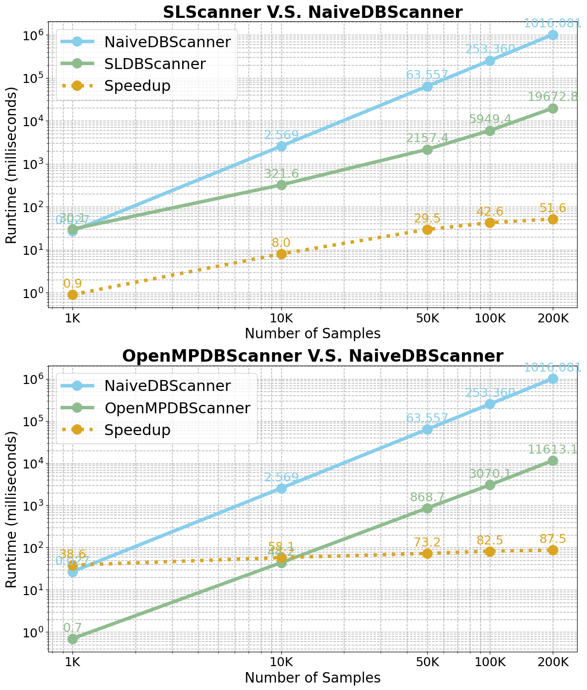
                    <div style="margin-left: 50px;">
                        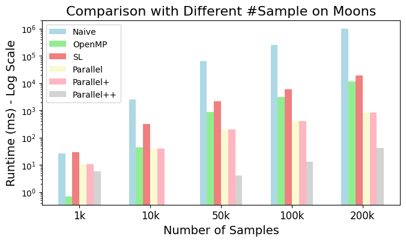
                    </div>
                </div>
                <div style="flex: 1; margin-left: 30px;">
                    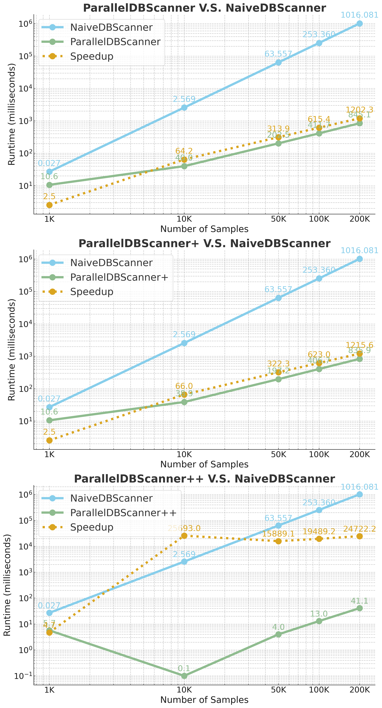
                </div>
            </div>
            <p style="font-size: 0.9rem; color: #555; margin-top: 0.5rem;">
                <strong>Note:</strong> Use <code>plt.xscale('log')</code> and <code>plt.yscale('log')</code>: A
                logarithmic scale allows us to visualize data with a wide range of values more effectively by scaling
                the axis by orders of magnitude. This makes patterns and trends more apparent, especially when dealing
                with exponential growth or data that varies greatly in size.
            </p>

            <div style="display: flex; justify-content: space-around; margin-top: 1.5rem;">
                <div style="text-align: center;">
                    <h4>Analysis - # Threads (OpenMPDBScanner - CPU)</h4>
                    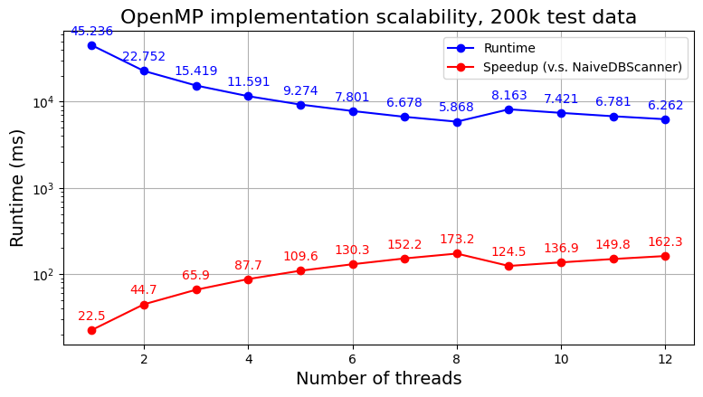
                </div>
                <div style="text-align: center;">
                    <h4>Analysis - Block Size (ParallelDBScanner - GPU & CUDA)</h4>
                    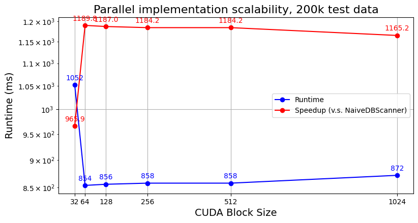
                </div>
            </div>
            <p style="margin-top: 1rem; font-size: 0.9rem; color: #555;">
                <strong>Blocksize:</strong> # threads in each CUDA thread block. Each CUDA Streaming Multiprocessor (SM)
                can manage and schedule a limited number of threads, usually 1024 or 2048. The blockSize needs to
                consider hardware limitations to fully utilize GPU resources. For compute-intensive tasks, a larger
                blockSize can often increase parallelism. For memory-intensive tasks, a smaller blockSize may be needed
                to reduce contention for shared memory and registers.
            </p>

            <div style="display: flex; justify-content: space-around; margin-top: 1.5rem;">
                <div style="text-align: center;">
                    <h4>Performance Comparison on Dataset Blobs</h4>
                    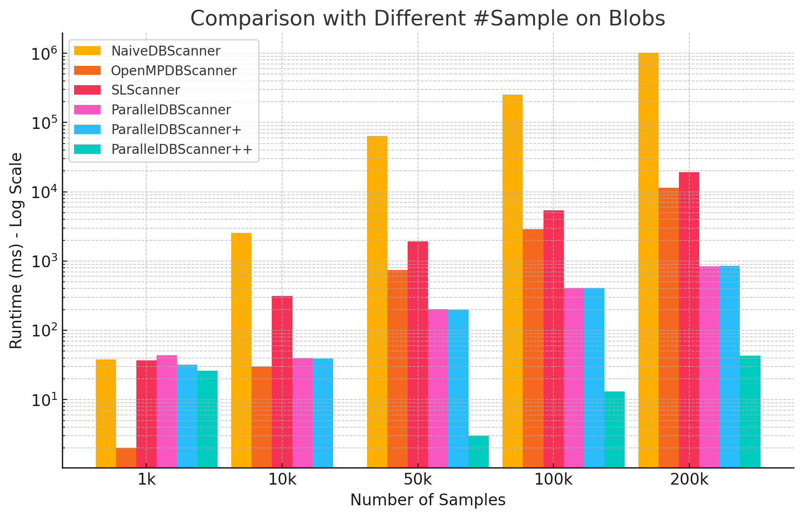
                </div>
                <div style="text-align: center;">
                    <h4>Performance Comparison on Dataset Chameleon</h4>
                    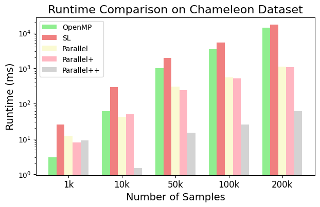
                </div>
            </div>
        </section>


        <section id="fine-tuning">
            <h2>Fine-tuning</h2>
            <p>
                To fine-tune the parameters in <strong>ParallelDBScanner++</strong> and evaluate the clustering
                performance, follow these steps:
            </p>
            <ol>
                <li>
                    <strong>Select Parameter Ranges:</strong> First, define the range of parameters you want to
                    experiment with.
                    The key parameters are <code>eps</code> (neighborhood radius) and <code>min_samples</code> (minimum
                    number of points required to form a core point).
                    Choose a reasonable range of values for these parameters to experiment with.
                </li>
                <li>
                    <strong>Run Clustering:</strong> For each set of parameter values, run the
                    <strong>ParallelDBScanner++</strong> to perform clustering.
                </li>
                <li>
                    <strong>Calculate Evaluation Metrics:</strong>
                    <ul>
                        <li>
                            <strong>Silhouette Coefficient:</strong> This metric assesses the quality of the clustering,
                            ranging from -1 to 1.
                            A higher value indicates better clustering quality.
                        </li>
                        <li>
                            <strong>Adjusted Rand Index (ARI):</strong> This metric evaluates the consistency between
                            the clustering results and the true labels.
                            A higher ARI indicates a closer match between the clustering results and the true
                            classification.
                        </li>
                        <li>
                            <strong>Proportion of Noise Points:</strong> Calculate the proportion of points labeled as
                            noise in the clustering results.
                            A higher proportion might indicate that the <code>eps</code> value is set too low, or that
                            the data contains many outliers.
                        </li>
                    </ul>
                </li>
                <li>
                    <strong>Analyze and Select Optimal Parameters:</strong> Compare the evaluation metrics across
                    different parameter settings.
                    Select the parameter combination that yields the highest Silhouette Coefficient, the highest ARI,
                    and a reasonable proportion of noise points as the optimal parameters.
                </li>
            </ol>
            <p style="font-size: 1rem; font-weight: bold; margin-top: 1rem;">
                Finetune (Moons: 1k ~ 200k; Blobs & Chameleon: 200k) on optimal DBScanner (Parallel++)
            </p>
            <div style="text-align: center; margin-top: 1.5rem;">
                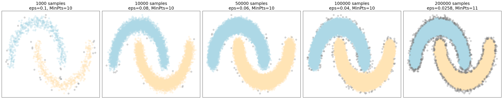
            </div>
            <div style="display: flex; justify-content: space-around; align-items: flex-start; gap: 1rem;">
                <div style="text-align: center;">
                    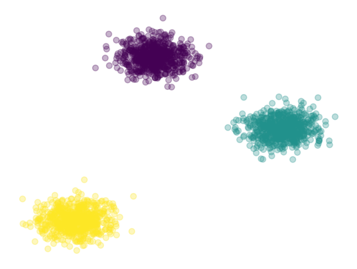
                </div>
                <div style="text-align: center;">
                    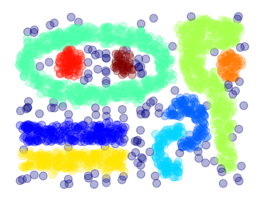
                </div>
            </div>
        </section>


        <section id="reference">
            <h2>References</h2>
            <ol>
                <li>
                    <em>G. Andrade, G. Ramos, D. Madeira, R. Sachetto, R. Ferreira, and L. Rocha.
                        G-DBSCAN: A GPU Accelerated Algorithm for Density-Based Clustering.
                        Procedia Computer Science, 18:369–378, 2013.</em>
                </li>
                <li>
                    <em>M. Ester, H.-P. Kriegel, J. Sander, and X. Xu.
                        A Density-Based Algorithm for Discovering Clusters in Large Spatial Databases with Noise.
                        In KDD, volume 96, pages 226–231, 1996.</em>
                </li>
                <li>
                    <em>Song, H., & Lee, J. G. (2018, May).
                        RP-DBSCAN: A Superfast Parallel DBSCAN Algorithm Based on Random Partitioning.
                        In Proceedings of the 2018 International Conference on Management of Data (pp. 1173-1187).</em>
                </li>
                <li>
                    <em>He, Y., Tan, H., Luo, W., Feng, S., & Fan, J. (2014).
                        MR-DBSCAN: A Scalable MapReduce-Based DBSCAN Algorithm for Heavily Skewed Data.
                        Frontiers of Computer Science, 8, 83-99.</em>
                </li>
                <li>
                    <em>Lulli, A., Dell'Amico, M., Michiardi, P., & Ricci, L. (2016).
                        NG-DBSCAN: Scalable Density-Based Clustering for Arbitrary Data.
                        Proceedings of the VLDB Endowment, 10(3), 157-168.</em>
                </li>
                <li>
                    <em>Cordova, I., & Moh, T. S. (2015, July).
                        DBSCAN on Resilient Distributed Datasets.
                        In 2015 International Conference on High Performance Computing & Simulation (HPCS) (pp.
                        531-540). IEEE.</em>
                </li>
            </ol>
        </section>


    </main>

    <footer>
        <p>&copy; Parallel DBSCAN by Yi Ge (Ellen).</p>
    </footer>
</body>

</html>